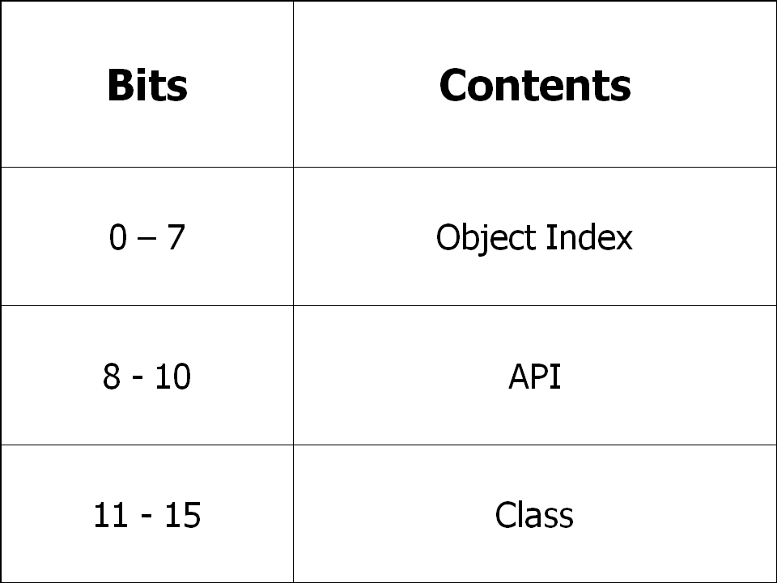

RTEMS Ada User's Guide
RTEMS Ada User's Guide
The sixteen bit format for an object ID is composed of three parts: API,
object class, and index. The data type rtems.id
is used to store object IDs.

The sixteen-bit format is designed to be as similar as possible to the thrity-two bit format. The differences are limited to the eliminatation of the node field and reduction of the index field from sixteen-bits to 8-bits. Thus the sixteen bit format only supports up to 255 object instances per API/Class combination and single processor systems. As this format is typically utilized by sixteen-bit processors with limited address space, this is more than enough object instances.


 RTEMS Ada User's Guide
RTEMS Ada User's Guide
Copyright © 1988-2008 OAR Corporation